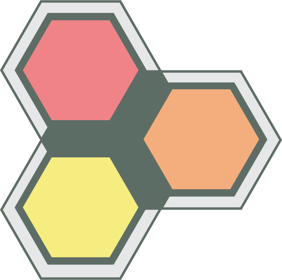
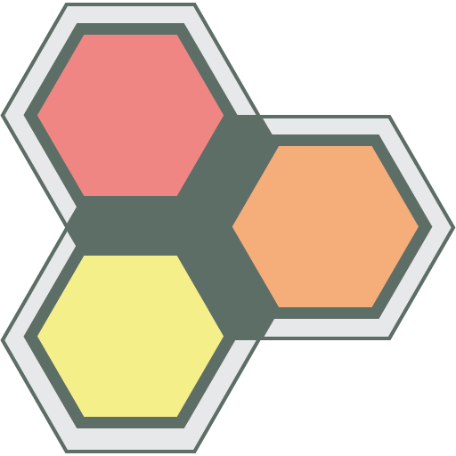
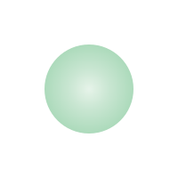
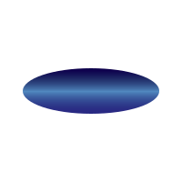

Scalable Vector Graphics

Read more: Vector graphics tutorial
pxScene now supports Scalable Vector Graphics (SVG) via the imageResource.
pxScene - SVG Support
Scene imageResource
Properties
- url
- URL to the SVG image
- w
- desired aspect width, or native size if omitted.
- h
- desired aspect height, or native size if omitted.
- sx
- desired horizontal scale factor.
- sy
- desired vertical scale factor.
The width and height properties define the maximum-height aspect fit for the SVG image
The sx and sy properties act as scling values for the Horizontal and Vertical dimensions of the source SVG image.
NOTE: Scaling values take precedence over width and height values, if both are passed to imageResource.
Whilst pxscene supports SVG images - the resulting images is rasterized to a bitmap at creation.
The resulting "bitmap" will stretch if scaled, in the same way as PNG or JPG resources.
The width and height tell the SVG rasterizer the desired scale within which to fit the SVG image being loaded.
pxScene has the following support for Scalable Vector Graphics (SVG):
SVG Elements
- path
- move
- line
- bezier curves etc
- arc
- rect
- circle
- ellipse
- polyline
- polygon
- fill-rule
SVG Attributes
- transform
- translate
- scale
- rotate
- skewX
- skewY
- viewBox
Gradient Fills
- linearGradient
- radialGradient
NOT CURRENTLY SUPPORTED
- Embedded 'image' data (base64)
Stroke
- stroke-width
- stroke-dasharray
- stroke-dashoffset
- stroke-opacity
- stroke-linecap
- stroke-linejoin
- stroke-miterlimit
SVG Advantages
Scalability
A major benefit of SVG images is that they are resolution independent. Unlike file types such as JPG or PNG, SVGs maintain the same quality no matter what screen resolution or size they are being drawn at. On a retina display, for instance, a JPG/PNG might stretched if it’s not large enough, an SVG will still look high-quality.File size
SVGs can result in smaller file sizes than other file types when optimized/minimized properly. This can be helpful when dealing with higher resolution screens, since SVGs don’t need to be created at larger sizes to accommodate the difference like raster images do. If you are using SVG files on your website, smaller file sizes mean your images will load faster. Editing capabilities SVG files are unique in that they can be edited in graphic editing programs (such as Adobe Illustrator, Inkscape or Sketch) like other images, but also in a text editor where the markup can be adjusted directly.Size
File sizes for SVG can be significantly smaller ...SVG Logo
Filesize: 4 KB
Dimensions: N x N
PNG Logo
Filesize: 29 KB
Dimensions: 512 x 512
Placeholders
Image place can be easily created using stylish linear gradients to imporve the visual appeal...{kind=link}
{kind=link}
{kind=link}
{kind=link}
Filesize: 12 KB
Dimensions: N x N
In this case the "Sample Text" is an SVG file of 12 KB - and does not require the overhead of a TrueType font file, and associated resources to render at any resolution.
NOTE: The TTF file for the above font is 42 KB.
SVG Essentials - Shapes
Below are some useful essential SVG shapes, demonstrating both linear and radial Gradient Fills.
{kind=link}
{kind=link}

Circle
{kind=link}

Ellipse
{kind=link}